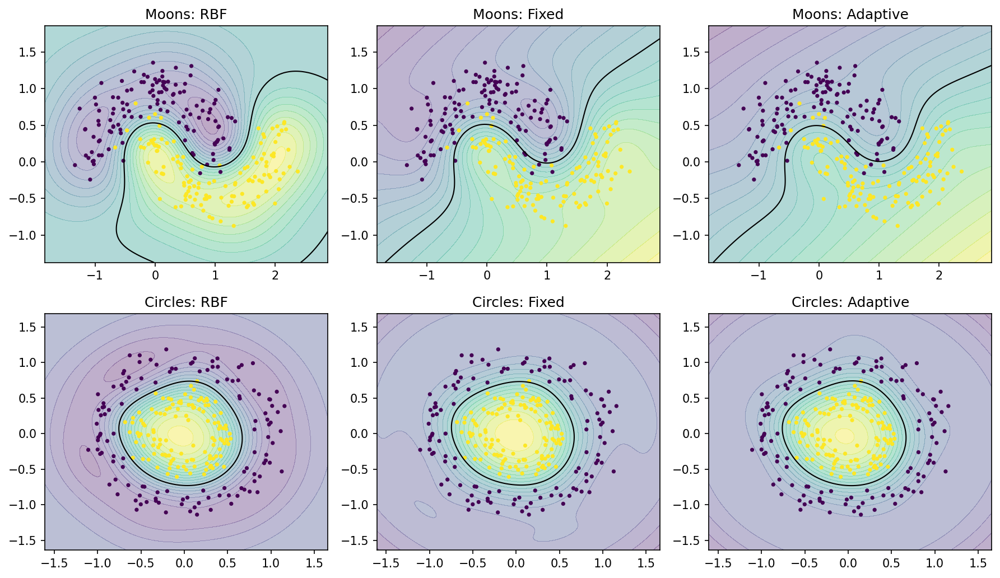
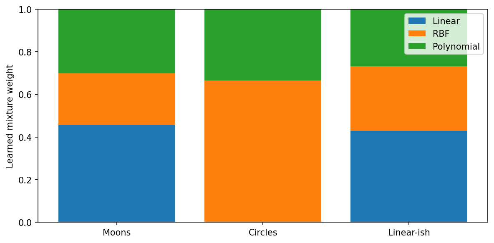
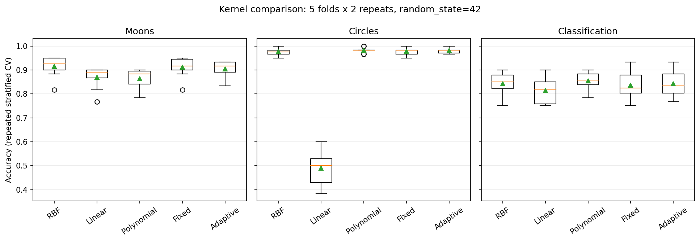

Kernel visualizations#
These figures are generated from reproducible synthetic-data examples using
svdynamics. They illustrate model behavior, not a claim that any composite
kernel is universally superior to an individual kernel.
Decision boundaries#
The panels compare a standard RBF SVM, a fixed-weight composite kernel, and an adaptive composite kernel on the same two-dimensional datasets. All models use standardized input features. Shading represents the decision function; the black contour marks the decision boundary.


Generated by generate_decision_boundaries.py using the package’s
SVDClassifier, CompositeKernel, and AdaptiveCompositeKernel.
Learned adaptive kernel weights#
The next figure shows the non-negative mixture weights learned by
AdaptiveCompositeKernel from three binary datasets. Each row of weights
sums to one. Kernel-target alignment is computed from the training labels;
the learned weights are not selected to maximize validation accuracy.


Generated by generate_kernel_weights.py. The figure uses the direct
AdaptiveCompositeKernel.fit(X, y) interface. When fitting through
SVDClassifier, inspect clf.kernel_.weights_ instead.
Repeated cross-validation comparison#
Accuracy distributions below use five-fold repeated stratified cross-validation with two repeats and a fixed random seed (42). Standardization and adaptive weight fitting occur inside each training fold. Results are specific to these synthetic datasets and hyperparameter choices.


Generated by generate_cv_figure.py. A single RBF kernel may match or
outperform the adaptive mixture; compare kernels using out-of-sample metrics
appropriate for your task.
Interactive kernel explorer#
Experiment with kernel geometry and parameter changes in the
SVM Kernel Explorer.
The explorer is a separate educational application and is not a benchmark
of the svdynamics Python package.
Reproducing the figures#
Copy the three generate_*.py scripts to a directory named
docs_visualization_assets at the repository root. The scripts write the
images into docs_visualization_assets/source/_static by default. Copy the
resulting PNG files into source/_static before building Sphinx, or adjust
the scripts’ output paths to point directly to source/_static.
python docs_visualization_assets/generate_decision_boundaries.py
python docs_visualization_assets/generate_kernel_weights.py
python docs_visualization_assets/generate_cv_figure.py
python -m sphinx -b html source docs